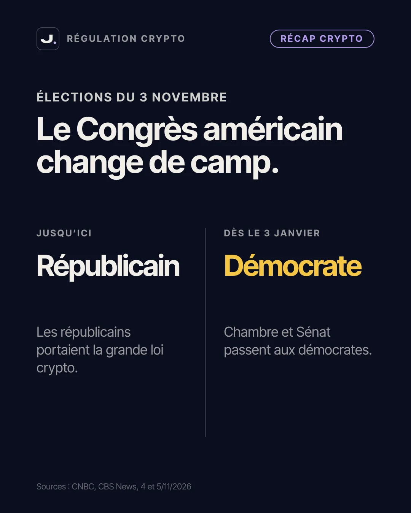
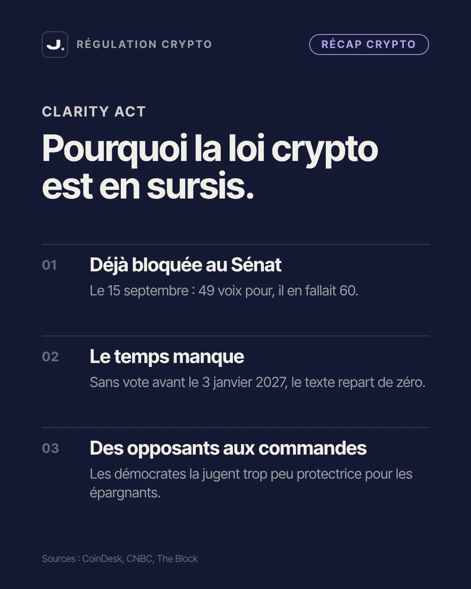
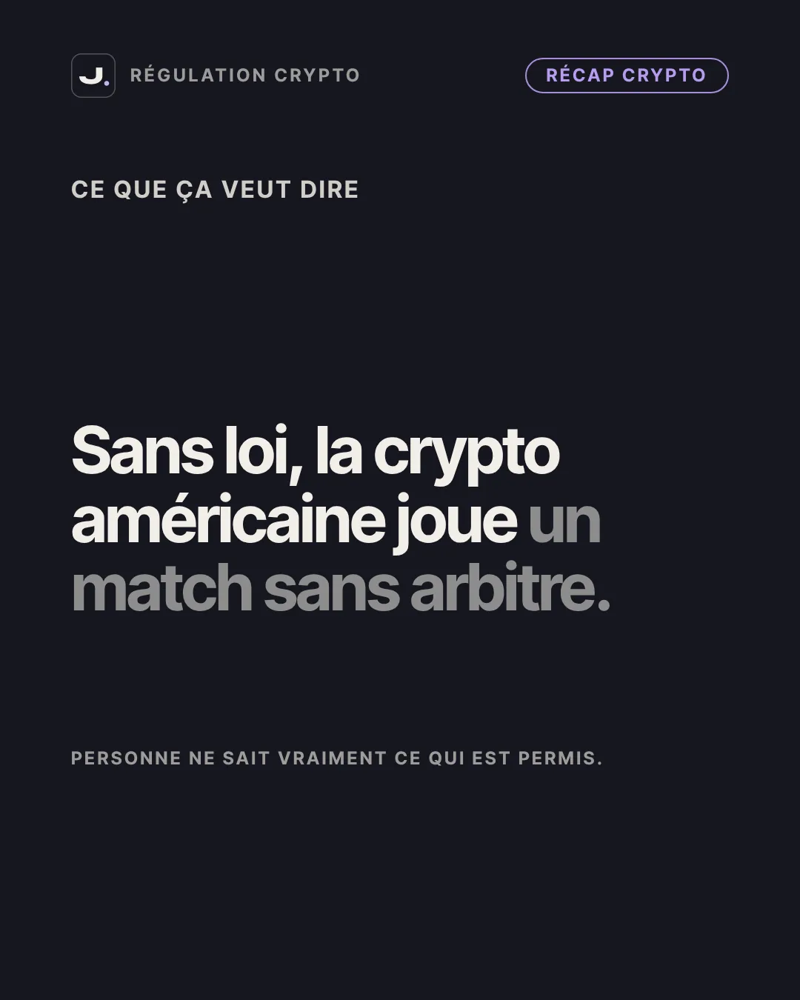
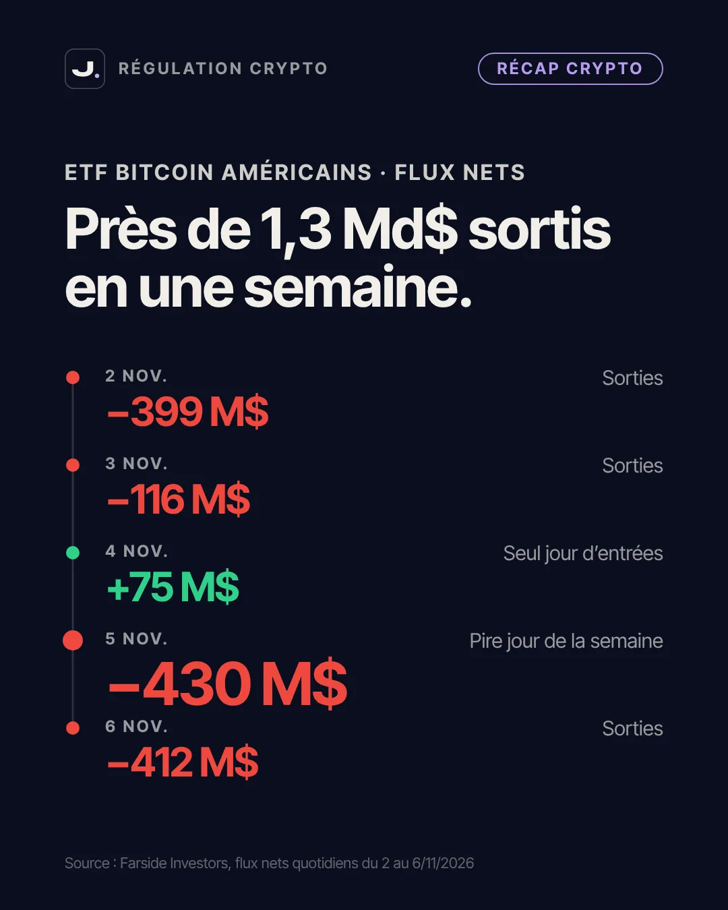
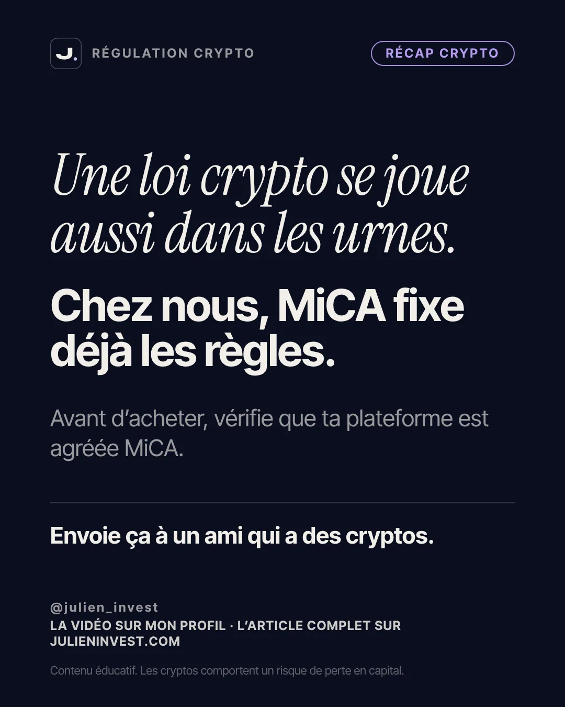

Cet article approfondit mon récap crypto de la semaine. Si tu débutes, commence par mon guide sur le règlement européen MiCA : c'est lui qui fixe les règles de tes plateformes en France, et tu comprendras mieux pourquoi une loi américaine te concerne quand même.
- Ce qui s'est passé : le Congrès américain change de camp
- Le CLARITY Act, c'est quoi exactement ?
- Pourquoi la loi crypto est en sursis
- En France : la déclaration des cryptos hors plateforme, votée puis tombée
- Le marché : environ 1,3 milliard de dollars sortis des fonds bitcoin
- Ce que ça change pour toi, en France
- Les erreurs fréquentes face à ce type de nouvelle
- Les limites de ce récap
- Les dates à surveiller
- Passer à l'action
- Le carrousel en images
- Questions fréquentes
Ce qui s'est passé : le Congrès américain change de camp
Le 3 novembre 2026, les Américains votaient pour les élections de milieu de mandat. Elles renouvellent toute la Chambre des représentants et une partie du Sénat, deux ans après l'élection présidentielle. Selon les résultats publiés par CNBC et CBS News entre le 4 et le 5 novembre, les démocrates ont gagné les deux chambres.
Pourquoi une élection américaine dans un récap crypto ? Parce que ce sont ces deux chambres qui votent les lois. Jusqu'ici, la majorité républicaine portait le principal texte attendu par le secteur, le CLARITY Act. La nouvelle majorité siégera à partir du 3 janvier 2027, et plusieurs de ses figures ont déjà dit que ce texte ne leur convenait pas.
Retiens bien la nuance : il ne s'agit pas d'une loi votée contre les cryptos. Il s'agit d'une loi attendue qui, selon toute vraisemblance, ne verra pas le jour dans sa forme actuelle. C'est un changement de calendrier et de rapport de force, pas une interdiction.
Le CLARITY Act, c'est quoi exactement ?
Le CLARITY Act est une proposition de loi sur la structure du marché des cryptos aux États-Unis. Son but est simple à formuler et compliqué à écrire : dire quelles cryptos relèvent des règles de la Bourse, lesquelles relèvent des règles des matières premières, et donc quel gendarme surveille quoi.
Pour te donner une image, imagine un match de football où personne ne sait vraiment si c'est l'arbitre de football ou celui de rugby qui siffle les fautes. Les joueurs continuent de jouer, mais chacun interprète les règles à sa façon, et les sanctions tombent parfois après coup. C'est un peu la situation des plateformes crypto américaines : les règles existent, mais elles sont floues et souvent fixées au cas par cas.
Le texte a été adopté par la Chambre des représentants en juillet 2025. Il devait ensuite passer au Sénat. C'est là que tout s'est compliqué.
Pourquoi la loi crypto est en sursis
1. Elle était déjà bloquée au Sénat
Le 15 septembre 2026, le Sénat a voté pour savoir s'il ouvrait le débat sur le texte. Il fallait 60 voix pour avancer. Le texte en a obtenu 49, contre 50. Le CLARITY Act n'a donc jamais été rejeté sur le fond, mais il n'a pas non plus pu avancer.
2. Le temps manque
Aux États-Unis, une proposition de loi qui n'a pas été adoptée avant la fin de la législature doit repartir de zéro. La législature actuelle se termine le 3 janvier 2027, jour où le nouveau Congrès s'installe. Il reste donc quelques semaines, pendant ce que les Américains appellent la session de fin de mandat, pour un éventuel nouveau vote. Les analystes cités par CoinDesk et CNBC jugent ce scénario peu probable.
3. Ses opposants prennent les commandes
Plusieurs élus démocrates, dont la sénatrice Elizabeth Warren, critiquent le texte depuis des mois. Elle a expliqué en septembre qu'elle voulait bien une loi crypto, mais que celle-ci ne protégeait pas assez les consommateurs. Si les démocrates président les commissions chargées de la finance, ils pourront écrire leur propre version, plus stricte. Pour Jaret Seiberg, analyste chez TD Cowen cité par CNBC, le texte devrait rester en suspens jusqu'en 2028. C'est une opinion d'analyste, pas une certitude.
En France : la déclaration des cryptos hors plateforme, votée puis tombée
Pendant ce temps, à l'Assemblée nationale, l'examen du budget 2027 a failli changer quelque chose de très concret pour les détenteurs de cryptos. Le 3 novembre, les députés ont adopté un amendement de Charles de Courson : il obligeait à déclarer chaque année les portefeuilles de cryptos détenus directement, hors plateforme, dès que leur valeur dépasse 100 000 € au 31 décembre. Une version plus stricte, avec un seuil de 5 000 €, avait été rejetée juste avant.
Qu'est-ce qu'un portefeuille hors plateforme ? C'est quand tu gardes toi-même tes cryptos, sur une clé matérielle ou une application dont toi seul as les codes, au lieu de les laisser sur un site d'échange. Les plateformes, elles, transmettent déjà des informations au fisc.
Le lendemain, 4 novembre, l'Assemblée a rejeté toute la partie recettes du budget, par 458 voix contre 0. Conséquence : tous les amendements adoptés dans cette partie, dont celui-ci, sont tombés. Le Sénat doit examiner le texte d'origine du gouvernement à partir du 20 novembre, et il peut réintroduire une obligation de ce type. Pour l'instant, donc, rien ne change pour toi. Si tu veux revoir ce que tu dois déjà déclarer aujourd'hui, mon guide sur la fiscalité des cryptos fait le point.
Le marché : environ 1,3 milliard de dollars sortis des fonds bitcoin
Un ETF bitcoin est un fonds coté en Bourse qui détient du bitcoin pour le compte de ses clients. C'est une porte d'entrée très utilisée par les grands investisseurs américains, ce qui fait de leurs flux un bon thermomètre de leur appétit.
Selon les données publiques de Farside Investors, les ETF bitcoin au comptant américains ont enregistré du 2 au 6 novembre des sorties nettes d'environ 1,3 milliard de dollars : 399 millions le 2, 116 millions le 3, une entrée de 75 millions le 4, puis 430 millions le 5 et 412 millions le 6. Le 6 novembre, le bitcoin est descendu jusqu'à 74 762 dollars, son plus bas niveau depuis le 21 août.
La politique n'explique pas tout. Le même jour, les chiffres de l'emploi américain d'octobre sont sortis bien au dessus des attentes, avec 165 000 créations de postes. Les marchés en ont déduit que la banque centrale américaine pourrait relever ses taux en décembre : selon l'outil CME FedWatch, la probabilité d'une hausse est passée à 76,8 %. Quand l'argent sans risque rapporte davantage, les actifs risqués comme le bitcoin attirent souvent moins. C'est une tendance observée, pas une loi automatique.
Ce que ça change pour toi, en France
Première chose rassurante : les règles qui s'appliquent à tes plateformes ne dépendent pas du Congrès américain. En Europe, c'est le règlement MiCA qui encadre les prestataires de services sur crypto-actifs. En France, la période de transition est terminée depuis le 1er juillet 2026 : selon l'AMF, seuls les prestataires agréés MiCA peuvent proposer leurs services aux résidents français.
Deuxième chose, plus nuancée : le prix du bitcoin se forme sur un marché mondial, et les États-Unis en sont le centre de gravité. Un marché américain sans règles claires peut rester plus nerveux, ce qui se répercute sur la valeur des cryptos que tu détiens, même achetées en euros sur une plateforme européenne. Personne ne peut dire dans quel sens le cours évoluera, et je ne fais pas de prévision.
Troisième chose, côté fiscalité française : la déclaration des cryptos hors plateforme est revenue plusieurs fois dans les débats ces derniers mois. Même si elle est tombée cette semaine, il est raisonnable de tenir à jour, dès maintenant, un suivi de ce que tu détiens et où. Si un jour l'obligation arrive, tu seras prêt, et en attendant ça t'aide déjà pour ta déclaration de plus-values.
Les erreurs fréquentes face à ce type de nouvelle
Confondre une loi bloquée et une interdiction
Le CLARITY Act en sursis ne rend pas les cryptos illégales aux États-Unis. Les plateformes continuent de fonctionner, les ETF bitcoin restent cotés, et les régulateurs actuels de la SEC et de la CFTC peuvent continuer à écrire des règles de leur côté.
Réagir à chaque gros titre
Une élection, un chiffre d'emploi, un vote au Sénat : chaque semaine apporte son événement. Acheter ou vendre à chaque annonce, c'est surtout multiplier les frais et les erreurs de timing. Les actualités servent à comprendre ce que tu détiens, pas à décider tous les lundis.
Croire qu'une règle française est définitive dès qu'elle est votée
Un amendement adopté en première lecture n'est pas une loi. Le budget passe encore par le Sénat, puis par une éventuelle commission mixte, avant d'être définitif. L'épisode de cette semaine en est la preuve.
Garder ses cryptos sur une plateforme non agréée
Depuis le 1er juillet 2026, une plateforme qui n'a pas d'agrément MiCA ne peut plus servir les clients français. Si la tienne n'apparaît pas dans les registres officiels, renseigne-toi avant tout nouveau dépôt.
Les limites de ce récap
Je veux être transparent sur ce que ces informations disent et ne disent pas. Les résultats des élections américaines venaient d'être projetés par les grands médias au moment où j'écris : quelques sièges restaient à confirmer, sans changer la majorité. Le sort du CLARITY Act reste incertain jusqu'au 3 janvier 2027, même si les analystes doutent d'un vote d'ici là.
Côté France, les détails de l'amendement sur les portefeuilles proviennent de médias spécialisés concordants (bitcoin.fr, Journal du Coin, Cryptoast), le rejet du budget de LCP. Les flux des ETF sont des données quotidiennes publiques, qui peuvent être légèrement révisées. Enfin, rien ici ne permet de prédire le prix du bitcoin, ni à court ni à long terme.
Ce récap ne s'applique pas tel quel si tu vis hors de France ou de l'Union européenne : tes règles dépendent alors de ton pays de résidence fiscale. Il ne s'applique pas non plus si tu n'as pas de cryptos : dans ce cas, la seule chose à retenir est qu'un placement très volatil se choisit en connaissance de cause, avec de l'argent dont tu n'as pas besoin à court terme.
Les dates à surveiller
- 10 novembre : publication de l'inflation américaine d'octobre. Un chiffre élevé renforcerait l'idée d'une hausse des taux en décembre.
- 17 novembre : en Russie, les particuliers pourront acheter du bitcoin, de l'ether et l'USDT via des intermédiaires agréés, avec un plafond de 300 000 roubles par an et par intermédiaire pour les non qualifiés et un test obligatoire. Un signe de plus que les États encadrent les cryptos plutôt qu'ils ne les ignorent.
- 20 novembre : le Sénat français commence l'examen du budget 2027. La déclaration des cryptos hors plateforme peut revenir.
- 3 janvier 2027 : installation du nouveau Congrès américain. Sans vote d'ici là, le CLARITY Act repart de zéro.
Pour garder la tête froide face aux variations, relis mon guide pour acheter et sécuriser ses cryptos, qui insiste sur la part de ton épargne que tu peux raisonnablement y consacrer.
Passer à l'action
Avant de te demander si une nouvelle crypto ou une nouvelle loi doit changer ta stratégie, demande-toi quel investisseur tu es. Le test gratuit de profil d'investisseur te pose quelques questions sur ton horizon, ta tolérance aux pertes et tes objectifs, et t'indique la place que des actifs très volatils peuvent avoir, ou non, dans ton épargne.
Si tu cherches une plateforme agréée pour acheter ou conserver des cryptos, j'ai rassemblé sur ma page parrainage les services que j'utilise. Ce sont des liens de parrainage : si tu t'inscris par leur intermédiaire, je peux toucher une commission, sans surcoût pour toi. Vérifie toujours toi-même l'agrément MiCA de la plateforme sur les registres officiels, et garde en tête que les cryptos comportent un risque de perte en capital, jusqu'à la totalité de la somme investie.
Le carrousel en images
Le résumé de cet article en 9 slides, à enregistrer ou à partager.





Un nouveau sujet chaque lundi, vendredi et dimanche : suis la série sur Instagram · TikTok · YouTube.
Questions fréquentes
Qu'est-ce que le CLARITY Act ?
C'est une proposition de loi américaine qui devait fixer les règles du marché des cryptos aux États-Unis : quelles cryptos relèvent des règles boursières, lesquelles relèvent des matières premières, et quel régulateur surveille quoi. Adoptée par la Chambre des représentants en juillet 2025, elle a été bloquée au Sénat le 15 septembre 2026.
Pourquoi les élections du 3 novembre 2026 menacent-elles cette loi ?
Les démocrates ont gagné la Chambre et le Sénat. Le nouveau Congrès s'installe le 3 janvier 2027 et, sans vote avant cette date, le texte doit repartir de zéro. Plusieurs élus démocrates, dont Elizabeth Warren, jugent le texte trop peu protecteur pour les consommateurs.
Dois-je déclarer mon portefeuille crypto personnel en France ?
Pas en vertu de l'amendement voté le 3 novembre 2026 : il est tombé le 4 novembre avec le rejet de la partie recettes du budget. Le Sénat examine le budget à partir du 20 novembre et pourrait réintroduire une obligation. Tes obligations actuelles (comptes ouverts à l'étranger, plus-values) restent inchangées.
Une loi américaine change-t-elle les règles de ma plateforme en France ?
Non. En Europe, les plateformes sont encadrées par le règlement MiCA, et en France seuls les prestataires agréés peuvent servir les clients depuis le 1er juillet 2026. En revanche, le marché américain pèse lourd dans la formation du prix du bitcoin.
Tu veux la méthode complète, pas juste cet article ?
Reçois mon ebook par email : les erreurs qui coûtent le plus cher quand on débute, et la marche à suivre pour les éviter.
- Les démocrates ont gagné le Congrès américain le 3 novembre 2026 : la loi crypto CLARITY Act est en sursis.
- Sans vote avant le 3 janvier 2027, le texte repart de zéro.
- En France, la déclaration des cryptos hors plateforme dès 100 000 € a été votée, puis est tombée avec le budget.
- Environ 1,3 milliard de dollars sont sortis des ETF bitcoin américains du 2 au 6 novembre.
- En Europe, MiCA encadre déjà tes plateformes : vérifie qu'elles sont agréées.
Sources
- CNBC, Democrats sweep 2026 midterms (04/11/2026)
- CBS News, résultats des élections au Sénat 2026 (04/11/2026)
- CoinDesk, Democratic sweep of Congress could be final blow to Clarity Act (04/11/2026)
- CNBC, Democratic sweep puts crypto on defensive in Washington (05/11/2026)
- The Block, Elizabeth Warren says she wants a crypto bill, but the Clarity Act just isn't it (15/09/2026)
- bitcoin.fr, l'Assemblée adopte la déclaration des portefeuilles dès 100 000 euros (03/11/2026)
- Journal du Coin, Paul Midy s'oppose à la déclaration des wallets dès 5 000 € (novembre 2026)
- LCP, Budget 2027 rejeté : quelles sont les prochaines étapes au Parlement ? (04/11/2026)
- Farside Investors, flux des ETF bitcoin (données du 2 au 6/11/2026)
- Bitcoin Magazine, Bitcoin holds near $75,000 after hot October jobs report (06/11/2026)
- AMF, fin de la période transitoire MiCA (juillet 2026)
- Cointelegraph, Russia approves Bitcoin, Ether and USDT for retail trading (06/11/2026)
Contenu éducatif, pas un conseil en investissement. Investir comporte un risque de perte en capital ; les performances passées ne préjugent pas des performances futures.
Découvre ton profil d'investisseur
Le test gratuit t'aide à savoir quelle place des actifs volatils comme les cryptos peuvent avoir dans ton épargne.
Faire le test gratuit